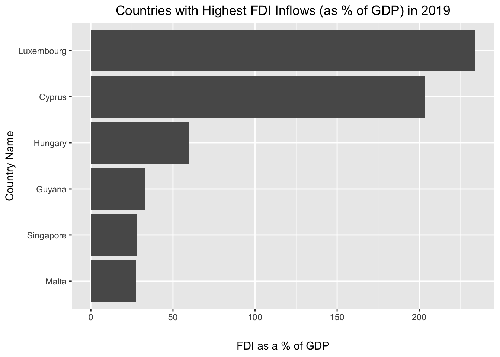

Below, we present suggested answers to the practice exercise. Please note that in many cases, there is more than one way to approach a given exercise, and the suggested solution may not be the only (or even best) solution.
library(tidyverse)
── Attaching core tidyverse packages ──────────────────────── tidyverse 2.0.0 ──
✔ dplyr 1.1.4 ✔ readr 2.1.5
✔ forcats 1.0.0 ✔ stringr 1.5.1
✔ ggplot2 3.5.1 ✔ tibble 3.2.1
✔ lubridate 1.9.4 ✔ tidyr 1.3.1
✔ purrr 1.0.2
── Conflicts ────────────────────────────────────────── tidyverse_conflicts() ──
✖ dplyr::filter() masks stats::filter()
✖ dplyr::lag() masks stats::lag()
ℹ Use the conflicted package (<http://conflicted.r-lib.org/>) to force all conflicts to become errors
Lesson 1
Exercise 1
Consider the following vector of Fahrenheit temperature values:
fahrenheit_colorado<-c(33, 15, 22, 44)
The first temperature is associated with Boulder; the second with Fort Collins; the third with Denver; and the fourth with Colorado Springs. Assign cities as labels to the temperature values with which they’re associated, and update fahrenheit_colorado with these changes.
Suggested Answer to Exercise 1
# assigns names to "fahrenheit_colorado" using the "names" function and a vector of namesnames(fahrenheit_colorado)<-c("Boulder", "Fort Collins", "Denver", "Colorado Springs")
# prints labeled "fahrenheit_colorado" vectorfahrenheit_colorado
Boulder Fort Collins Denver Colorado Springs
33 15 22 44
Exercise 2
Apply a transformation to fahrenheit_colorado that converts the temperature values to Celsius, and assign this new vector of Celsius temperatures to a new object named celsius_colorado.
Suggested Answer to Exercise 2
# applies Fahrenheit to Celsius conversion formula to "fahrenheit_colorado" and assigns resulting vector of Celsius values to a new object named "celsius_colorado"celsius_colorado<-(fahrenheit_colorado-32)*5/9
# prints contents of "celsius_colorado"celsius_colorado
Boulder Fort Collins Denver Colorado Springs
0.5555556 -9.4444444 -5.5555556 6.6666667
Exercise 3
Transform the class of the updated celsius_colorado object into “data.frame”, and assign the new data frame to an object named celsius_colorado_df.
Suggested Answer to Exercise 3
# uses "as.data.frame" function to transform "celsius_colorado" into a data.frame object, and assigns the data frame to a new object named "celsius_colorado_df"celsius_colorado_df<-as.data.frame(celsius_colorado)
# prints contents of "celsius_colorado_df"celsius_colorado_df
Consider our toy country-level data frame, which is reproduced below:
Country GDP Population Continent
1 Country A 8000 2000 South America
2 Country B 30000 5400 Europe
3 Country C 23500 10000 North America
A). What is the class of the “Continent” Column?
B). Extract the “Population” column into a new object. What is it’s class? Convert it to the “data.frame” class.
C. Extract the first three columns of country_df and assign this subsetted data frame to a new object. View it in the R Studio data viewer.
D. Extract the value of Country B’s population using indexing.
Answer to Exercise 4a
# extracts class of "Continent" columnclass(country_df$Continent)
[1] "character"
Suggested Answer to Exercise 4b
# extracts "Population" column into a new object named "country_df_population"country_df_population<-country_df$Population# prints class of "country_df_population"class(country_df_population)
[1] "numeric"
# converts "country_df_population" to a data.framecountry_df_population<-as.data.frame(country_df_population)
Suggested Answer to Exercise 4c
# extracts first three columns of "country_df_columns" and assigns it to a new object named "country_df_columns"country_df_columns<-country_df[, 1:3]# prints "country_df_columns", pass object to View() function to see it in the data viewercountry_df_columns
Country GDP Population
1 Country A 8000 2000
2 Country B 30000 5400
3 Country C 23500 10000
Suggested Answer to Exercise 4d
# extracts Country B's population (2nd row, 3rd column)country_df[2,3]
[1] 5400
Exercise 5
Deposit fahrenheit_colorado,celsius_colorado , and country_df into a new list object. After you have done so, extract country_df from the list using index numbers and bracket notation. Then, assign the list elements names of your choosing, and extract the celsius_colorado list object using its name and bracket notation.
Suggested Answer to Exercise 5
# makes a list with the relevant elements and assigns it to a new object named "exercise_list"exercise_list<-list(fahrenheit_colorado, celsius_colorado, country_df)# extracts "country_df" from list using its indexcountry_df[[3]]
[1] 2000 5400 10000
# assigns names to "exercise_list"names(exercise_list)<-c("CO_F", "CO_C", "ToyDF")# extracts data frame using its list labelexercise_list[["ToyDF"]]
Country GDP Population Continent
1 Country A 8000 2000 South America
2 Country B 30000 5400 Europe
3 Country C 23500 10000 North America
Lesson 2
Exercise 1
Write a function that takes a monetary value (in US dollars) as an input, and returns the equivalent value in Euros. Assign the function to an object, and test it out with some sample arguments.
Suggested Answer to Exercise 1
# creates a US Dollar (usd) to Euro (eur) conversion function based on current Dollar to Euro exchange rateusd_to_eur<-function(dollar_input){ dollar_to_euro_conversion<-dollar_input*0.9637return(dollar_to_euro_conversion)}
# Uses function to convert $18.23 to Eurosusd_to_eur(18.23)
[1] 17.56825
# Uses function to convert $127.00 to Eurosusd_to_eur(127)
[1] 122.3899
Exercise 2
Write a function that takes a monetary value (in US Dollars) as an input, as well as an argument in which the user can tell the function to convert that value to an equivalent amount in Euros, Indian Rupees, or Mexican Pesos. The function returns the US dollar equivalent in the desired currency. Assign this function to a new object.
Suggested Answer to Exercise 2
# creates new function, "exchange_rate_calculator", that converts USD amount to Euros (EUR), Indian Rupees (INR), or Pesos (MXN); if the desired currency argument is not either "EUR", "INR", or "MXN" (i.e. the currency tickers), the function throws an errorexchange_rate_calculator<-function(USD_currency_value, desired_currency){if (desired_currency=="EUR"){ euros<-USD_currency_value*0.96return(euros) } elseif (desired_currency=="INR"){ inr<-USD_currency_value*87.58return(inr) } elseif (desired_currency=="MXN"){ mxn<-USD_currency_value*20.48return(mxn) } else{stop("Please indicate whether you'd like to convert this value to EUR, INR, or MXN") }}
# tests "exchange_rate_calculator" by converting $25 to INRexchange_rate_calculator(25, "INR")
[1] 2189.5
# uses "exchange_rate_calculator" to convert $25 to EURexchange_rate_calculator(25, "EUR")
[1] 24
# uses "exchange_rate_calculator" to convert $25 to MXNexchange_rate_calculator(25, "MXN")
[1] 512
Exercise 3
Take the function you wrote for Exercise 1 above (i.e. usd_to_eur()), and use a function from the purrr package to programmatically generate a data frame where one column contains US dollars in the following amounts: 10.25, 1245.55, 83, 76, 11559, and the other column contains the equivalent sum of money in Euros.
Suggested Answer to Exercise 3
# create vector of USD currency values to convertusd_vector<-c(10.25, 1245.55, 83, 76, 11559)# create vector that contains converted Euro valueseuro_vector<-map_dbl(.x=usd_vector, .f=usd_to_eur)# creates dataset with USD values in one column, and corresponding converted Euro values in anothercurrency_df<-data.frame(USD_Value=usd_vector,EUR_Value=euro_vector)
Write a function that takes a dataset as an input argument, and returns a table of summary statistics that includes a column containing information on the number of missing values/NA values associated with each variable.
Suggested Answer to Exercise 1
First, we’ll load the psych package, since we’ll use its describe() function to create the initial summary statistics table.
# load psych librarylibrary(psych)
Attaching package: 'psych'
The following objects are masked from 'package:ggplot2':
%+%, alpha
Now, we’ll write a function that takes a dataset as an input argument, and then generates summary statistics for that dataset using the describe() function, with an additional column for the number of NA values associated with each variable appended to the default dataset created by describe(). The function below, takes an input dataset, and then creates a new column within the summary statistics table using the mutate() function. This new column is populated with a vector that contains the number of NA values for each column in the dataset. This vector, in turn, is created by using the map_dbl() function to iteratively apply a simple function that calculates the number of missing values in a vector (which is defined here within the main function, count_missing()) to all of the columns in the input dataset. The function then returns this modified dataset, with a new column indicating the number of NA values for each variable, as its output.
summary_stats_na<-function(dataset_input){# Define a named function to count missing valuescount_missing <-function(x) {sum(is.na(x))}# create summary statistics tablesummary_stats<-describe(dataset_input)# create missing values vectorsummary_stats_na<-summary_stats %>%mutate(na_values=map_dbl(.x=dataset_input, .f=count_missing))return(summary_stats_na)}
Let’s test this function on the toy dataset we created in that lesson, to ensure it works as expected:
# makes toy dataset, assigned to object named "student_scores"student_scores<-data.frame(ID=c(1:5),Age=c(25, NA, 30, 22, NA),Score=c(85, 90, NA, 78, 88))# passes "student_scores" as argument to "summary_stats_na"summary_stats_na(student_scores)
vars n mean sd median trimmed mad min max range skew kurtosis se
ID 1 5 3.00 1.58 3.0 3.00 1.48 1 5 4 0.00 -1.91 0.71
Age 2 3 25.67 4.04 25.0 25.67 4.45 22 30 8 0.16 -2.33 2.33
Score 3 4 85.25 5.25 86.5 85.25 3.71 78 90 12 -0.44 -1.91 2.63
na_values
ID 0
Age 2
Score 1
Exercise 2
Earlier, we used the following to drop rows in the student_scores dataset that have NA values associated with the “Age” variable: drop_na(student_scores, Age). Rewrite that code using the %>% operator.
Suggested Answer to Exercise 2
# uses pipe (%>% operator to drop rows in "student_scores" dataset for which values in the "Age" variable are missing)student_scores %>%drop_na(Age)
ID Age Score
1 1 25 85
2 3 30 NA
3 4 22 78
Exercise 3
Apply the filter() AND the select() function to one of the datasets we’ve worked with in this lesson (chaining together operations with the %>% operator), and assign the modified dataset to a new object that you write out to a local directory on your computer as a CSV file.
Suggested Answer to Exercise 3
We’ll use our toy dataset student_scores; below, we select the “ID” and “Score” variables, and then subset the dataset to keep only rows with “Score” values greater than 80; the result is assigned to a new object named student_scores_modified:
# selects "ID" and "Score" columns from "student_scores" and then uses the "filter" function to subset the dataset to keep only rows with "Score values greater than 80student_scores_modified<-student_scores %>%select(ID, Score) %>%filter(Score>80)
This modified dataset can be written out to the working directory using the write_csv() function:
# writes "student_scores_modified" to working directory as CSV file named "student_scores_modified.csv"write_csv(student_scores_modified, "student_scores_modified.csv")
Lesson 4
Exercise 1
Create a visualization with the ggplot2 package using either the Persson-Tabellini dataset, one (or some combination) of the World Bank datasets, or a dataset of your choice and export it out of R as a PDF file.
Possible Answer to Exercise 1
First, let’s read in all of the World Bank datasets into our R environment. We’ll first create a vector of the file names we want to read in:
# creates vector of file names and assigns it to a new object named "wdi_datasets_files"wdi_datasets_files<-list.files("data/wb")# prints "wdi_datasets_files"wdi_datasets_files
Now we’ll read these datasets into a new list object named wdi_datasets:
setwd("data/wb")# uses "map" function to iteratively pass the file names in "wdi_datasets_files" to the "read_csv" function, and read in the World Bank files into a list assigned to an object named "wdi_datasets_list"wdi_datasets_list<-map(.x=wdi_datasets_files, .f=read_csv)
Rows: 271 Columns: 5
── Column specification ────────────────────────────────────────────────────────
Delimiter: ","
chr (5): Country Name, Country Code, Series Name, Series Code, 2019 [YR2019]
ℹ Use `spec()` to retrieve the full column specification for this data.
ℹ Specify the column types or set `show_col_types = FALSE` to quiet this message.
Rows: 271 Columns: 5
── Column specification ────────────────────────────────────────────────────────
Delimiter: ","
chr (5): Country Name, Country Code, Series Name, Series Code, 2019 [YR2019]
ℹ Use `spec()` to retrieve the full column specification for this data.
ℹ Specify the column types or set `show_col_types = FALSE` to quiet this message.
Rows: 271 Columns: 5
── Column specification ────────────────────────────────────────────────────────
Delimiter: ","
chr (5): Country Name, Country Code, Series Name, Series Code, 2019 [YR2019]
ℹ Use `spec()` to retrieve the full column specification for this data.
ℹ Specify the column types or set `show_col_types = FALSE` to quiet this message.
Rows: 271 Columns: 5
── Column specification ────────────────────────────────────────────────────────
Delimiter: ","
chr (5): Country Name, Country Code, Series Name, Series Code, 2019 [YR2019]
ℹ Use `spec()` to retrieve the full column specification for this data.
ℹ Specify the column types or set `show_col_types = FALSE` to quiet this message.
Let’s name these list elements after their file names with the “.csv” extension removed:
# removes CSV extension from "worldbank_filenames"wdi_datasets_files_base<-str_remove(wdi_datasets_files, ".csv")# assigns namesnames(wdi_datasets_list)<-wdi_datasets_files_base
Let’s say we want to create a simple bar chart displaying the countries with the six highest values for FDI as a percentage of GDP variable. First, we’ll pull the FDI dataset out of our list and assign it to a new object in the global environment:
# pulls out FDI dataset from "wdi_datasets_list" and assigns it to a new object, "fdi2019" in the global environmentfdi2019<-wdi_datasets_list[["wdi_fdi2019"]]
To remove ambiguity, we’ll rename the variable name columns the and drop “NA” values:
# cleans "fdi2019" and assigns the dataset with the renamed variables and dropped NAs back to "fdi2019"fdi2019<-fdi2019 %>%rename(fdi_2019="2019 [YR2019]",Country="Country Name") %>%drop_na()
We also need to make sure “fdi_2019” is encoded as a “numeric” variable, so that ggplot2 interprets the variable correctly:
# converts "fdi_2019" variable in "fdi_2019" to numeric classfdi2019<-fdi2019 %>%mutate(fdi_2019=as.numeric(fdi_2019))
Warning: There was 1 warning in `mutate()`.
ℹ In argument: `fdi_2019 = as.numeric(fdi_2019)`.
Caused by warning:
! NAs introduced by coercion
Now, let’s use the slice_max() function to extract the countries with the six highest values for “fdi_2019” and assign it to a new object named fdi2019_slice6:
# extracts the countries with the six highest values on the "fdi_2019" variable, and assigns the subsetted data to a new object named "fdi2019_slice6"fdi2019_slice6<-fdi2019 %>%slice_max(order_by = fdi_2019, n=6)
Let’s now make our bar chart and assign it to a new object named fdi2019_slice6_plot:
# makes bar chart of FDI values from "fdi2019_slice6_plot" and assigns it to a new object named "fdi2019_slice6_plot"fdi2019_slice6_plot<-ggplot(fdi2019_slice6)+geom_col(aes(x=reorder(Country, fdi_2019), y=fdi_2019))+labs(title="Countries with Highest FDI Inflows (as % of GDP) in 2019",x="Country Name", y="FDI as a % of GDP")+theme(plot.title=element_text(hjust=0.5),axis.text.x =element_text(angle =0),axis.title.x=element_text(margin=margin(t=20)))
Let’s now see what the visualization looks like:
# prints "fdi2019_slice6_plot"fdi2019_slice6_plot

Recall that if we want a sideways bar chart, we can simply use the coord_flip() function:
# flips the coordinate axis of "fdi2019_slice6_plot"fdi2019_slice6_plot+coord_flip()
Finally, to export fdi2019_slice6_plot from R to a PDF on a specified directory on your computer, use something like the following, which writes the visualization as a PDF to the “outputs” subdirectory within the working directory.
Write a function to perform some operation(s) on one of the World Bank datasets, then iteratively apply that function to all of the World Bank datasets. Write out the transformed files to a local directory on your computer.
Possible Answer to Question 2
Let’s write a function that extracts the rows for the countries with the five highest values on the “2019 [YR2019]” variable and assign it to a new object named wdi_transform():
# creates function that takes dataset input drops NA values, converts the "2019 [YR2019]" variable to numeric, and extracts the observations with the six highest values on "2019 [YR2019]", and returns this modified dataset; function is assigned to a new object named "wdi_transform"wdi_transform<-function(dataset_input){ dataset_cleaned<-dataset_input %>%drop_na() %>%mutate(`2019 [YR2019]`=as.numeric(`2019 [YR2019]`)) %>%slice_max(order_by=`2019 [YR2019]`, n=5)return(dataset_cleaned)}
Now, let’s iteratively apply this function to all of the datasets in wdi_datasets_list using the map() function and write the output to a new list named wdi_datasets_list_transformed:
# iteratively passes datasets in "wdi_datasets_list" to "wdi_transform" function and deposits outputs in a new list object named "wdi_datasets_list_transformed"wdi_datasets_list_transformed<-map(.x=wdi_datasets_list, .f=wdi_transform)
Warning: There was 1 warning in `mutate()`.
ℹ In argument: `2019 [YR2019] = as.numeric(`2019 [YR2019]`)`.
Caused by warning:
! NAs introduced by coercion
There was 1 warning in `mutate()`.
ℹ In argument: `2019 [YR2019] = as.numeric(`2019 [YR2019]`)`.
Caused by warning:
! NAs introduced by coercion
There was 1 warning in `mutate()`.
ℹ In argument: `2019 [YR2019] = as.numeric(`2019 [YR2019]`)`.
Caused by warning:
! NAs introduced by coercion
There was 1 warning in `mutate()`.
ℹ In argument: `2019 [YR2019] = as.numeric(`2019 [YR2019]`)`.
Caused by warning:
! NAs introduced by coercion
Let’s print the contents of wdi_datasets_list_transformed:
# prints contents of "wdi_datasets_list_transformed"wdi_datasets_list_transformed
$wdi_debt2019
# A tibble: 5 × 5
`Country Name` `Country Code` `Series Name` `Series Code` `2019 [YR2019]`
<chr> <chr> <chr> <chr> <dbl>
1 Greece GRC Central governmen… GC.DOD.TOTL.… 212.
2 Japan JPN Central governmen… GC.DOD.TOTL.… 198.
3 United Kingdom GBR Central governmen… GC.DOD.TOTL.… 160.
4 Singapore SGP Central governmen… GC.DOD.TOTL.… 128.
5 Spain ESP Central governmen… GC.DOD.TOTL.… 112.
$wdi_fdi2019
# A tibble: 5 × 5
`Country Name` `Country Code` `Series Name` `Series Code` `2019 [YR2019]`
<chr> <chr> <chr> <chr> <dbl>
1 Luxembourg LUX Foreign direct in… BX.KLT.DINV.… 234.
2 Cyprus CYP Foreign direct in… BX.KLT.DINV.… 204.
3 Hungary HUN Foreign direct in… BX.KLT.DINV.… 60.0
4 Guyana GUY Foreign direct in… BX.KLT.DINV.… 32.8
5 Singapore SGP Foreign direct in… BX.KLT.DINV.… 27.9
$wdi_trade2019
# A tibble: 5 × 5
`Country Name` `Country Code` `Series Name` `Series Code` `2019 [YR2019]`
<chr> <chr> <chr> <chr> <dbl>
1 Luxembourg LUX Trade (% of … NE.TRD.GNFS.… 382.
2 Hong Kong SAR, Chi… HKG Trade (% of … NE.TRD.GNFS.… 354.
3 Singapore SGP Trade (% of … NE.TRD.GNFS.… 322.
4 Djibouti DJI Trade (% of … NE.TRD.GNFS.… 321.
5 Malta MLT Trade (% of … NE.TRD.GNFS.… 310.
$wdi_urban2019
# A tibble: 10 × 5
`Country Name` `Country Code` `Series Name` `Series Code` `2019 [YR2019]`
<chr> <chr> <chr> <chr> <dbl>
1 Bermuda BMU Urban popula… SP.URB.TOTL.… 100
2 Cayman Islands CYM Urban popula… SP.URB.TOTL.… 100
3 Gibraltar GIB Urban popula… SP.URB.TOTL.… 100
4 Hong Kong SAR, Ch… HKG Urban popula… SP.URB.TOTL.… 100
5 Kuwait KWT Urban popula… SP.URB.TOTL.… 100
6 Macao SAR, China MAC Urban popula… SP.URB.TOTL.… 100
7 Monaco MCO Urban popula… SP.URB.TOTL.… 100
8 Nauru NRU Urban popula… SP.URB.TOTL.… 100
9 Singapore SGP Urban popula… SP.URB.TOTL.… 100
10 Sint Maarten (Dut… SXM Urban popula… SP.URB.TOTL.… 100
To export these modified files to disk as CSVs, let’s first create a vector containing the file paths and desired file names for the exported files, and assign it to an object named WB_filenames_export:
# create vector of file paths and names for exported World Bank files and assign it to a new object named "WB_filenames_export"WB_filenames_export<-paste0("outputs/", wdi_datasets_files_base, "_extract.csv")
Now, we’ll write out the modified datasets using the file paths and names in the WB_filenames_export vector using the walk2() function. The first argument is the list containing the modified datasets we want to export, while the second argument is the vector of strings with file names and paths; the third argument is the function we’re applying. The walk2() function sequentially passes each of the datasets in wdi_datasets_list_transformed and each of the corresponding file path+name strings in WB_filenames_export as arguments to write_csv().
# uses "write_csv()" function to iteratively write out datasets in "wdi_datasets_list_transformed" using the file names and paths in "WB_filenames_export"walk2(.x=wdi_datasets_list_transformed, .y=WB_filenames_export, .f=write_csv)
Confirm that the datasets have been written to the specified directory as expected.
Lesson 5
The exercises in Lesson 5 invite you to explore R’s Project features, as well as Quarto, and don’t require writing any original code. Please reach out if you encounter any issues as you explore these tools.